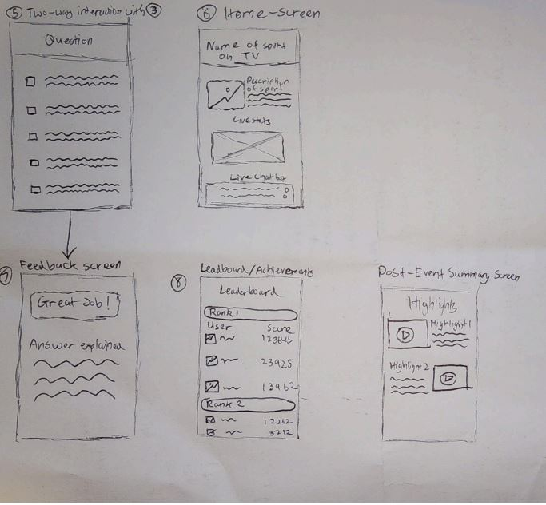
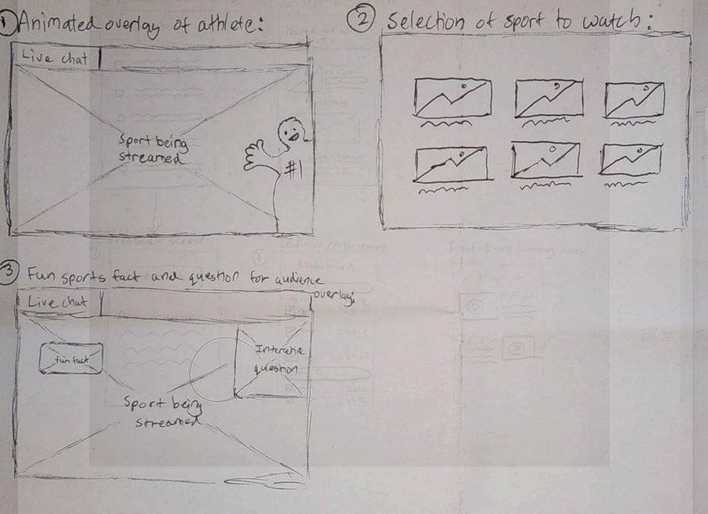
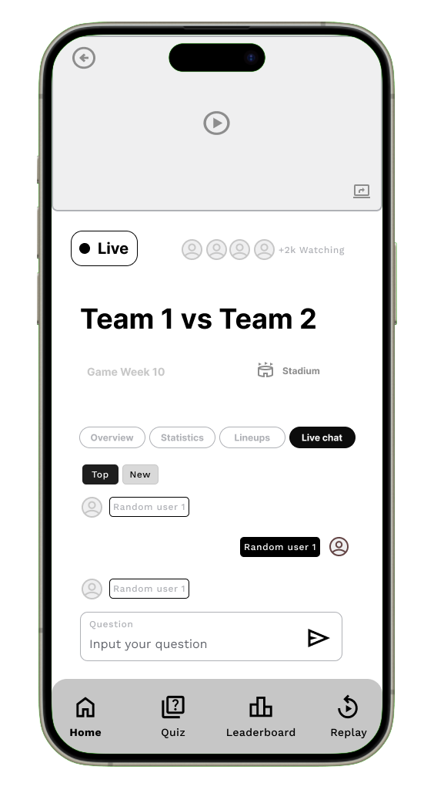
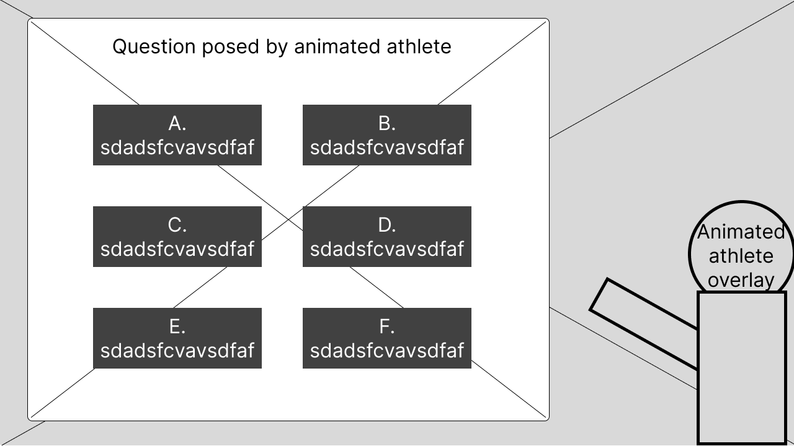
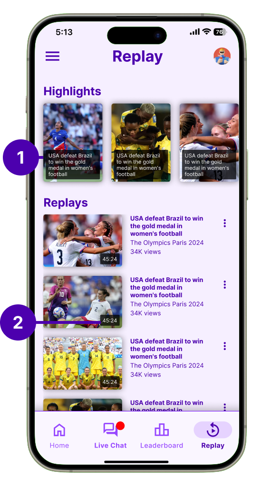
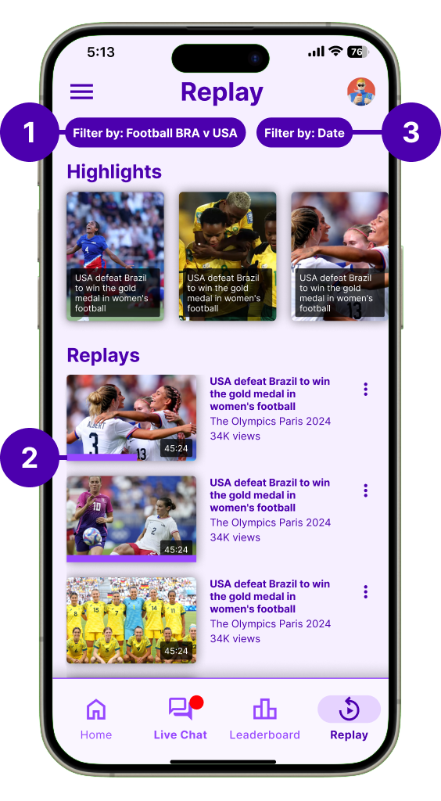

Olympics Companion App
A dual-screen Olympic viewing experience that engages kids through gamified interactions, trivia, and live athlete overlays.

A dual-screen Olympic viewing experience that engages kids through gamified interactions, trivia, and live athlete overlays.
Despite the Olympics' global appeal, young viewers consistently struggle to engage with Olympic broadcasts, especially when it comes to lesser-known sports with complex or unfamiliar rules. Traditional, passive TV formats do not resonate with children who are used to interactive, dynamic digital experiences such as games and apps.
This results in reduced interest, confusion, and missed educational opportunities for young audiences. Parents also express concern about overstimulation and the developmental impact of extended, unengaging screen time.
There is a clear need for engaging, interactive, and educational solutions that bridge the understanding gap for young viewers, making Olympic broadcasts not just more accessible, but also supportive of children’s well-being and learning.
Research Appendix → Usability Testing Appendix → Final Visual Report
A multi-method approach to uncover insights about how kids engage with Olympic broadcasts.
These guiding questions shaped our investigation into how young audiences interact with Olympic content and what design interventions can improve their experience:
To support the problem space, I conducted an online ethnography using community insights from Reddit and Quora. These platforms offered unfiltered perspectives from parents and general users about why children struggle to engage with sports broadcasts.
A Reddit user highlighted the impact of traditional TV on young viewers, emphasizing overstimulation, reduced social interaction, and diminished learning time. This insight points to the need for more mindful, balanced digital experiences.

On Quora, users shared how children often feel frustrated by the lack of interactivity in sports broadcasts. Compared to video games where they have agency, TV makes them passive observers, which limits engagement and emotional connection.

To complement our ethnographic insights, we reviewed research articles and opinion pieces that explore how interactive features can support children's engagement with sports and the Olympics. These articles reinforce our problem scenario by showing how participation, emotional connection, and interactivity improve learning and retention for young viewers.
This article highlights how features like live stats, fan polls, and discussions enhance broadcasts by making them more engaging and participatory. These tools help bridge the gap between passive viewing and active interaction, especially effective for kids raised on interactive platforms.
This research explores how characters directly asking questions and interactive segments improve learning. These features help children retain knowledge and stay engaged, especially when watching unfamiliar or complex content. It strongly supports our aim to use interactive tools during Olympic broadcasts.
This article emphasizes that the Olympics can teach values like heroism, perseverance, and patriotism. Interactive features help translate these values to kids in more accessible ways, improving their emotional connection to the events.
Watching the Olympics has been shown to inspire children to try new sports. In Australia, admiration for athletes drives motivation. This underscores how interactive experiences can amplify inspiration and turn passive watching into active interest.
This article discusses how interactive storytelling can help bridge knowledge gaps and make Olympic values more relatable. With tools that foster emotional understanding, even unfamiliar sports become meaningful.
Competitor analysis was conducted to identify design strategies that successfully engage young audiences with complex sports content. This method helped uncover interactive patterns, accessibility features, and visual techniques used by leading platforms like F1 Kids, NFL on Nickelodeon, and YouTube Kids. These insights informed feature comparisons and UI decisions for our solution.


| Feature | F1 Kids | NFL on Nickelodeon | YouTube Kids |
|---|---|---|---|
| Shows most relevant kids sport content | ✓ Only for racing sport | ✓ Only for NFL | ✓ Offers variety via robust search |
| Interactive statistics | ✓ Leaderboard overlay | ✓ Spongebob explains stats | ✗ Little to no interactive stats |
| Real-time rule explanations | ✗ No explanations | ✓ Explained by child actors | ✗ None unless searched |
| Visual aids / infographics | ✓ Cartoon overlays | ✓ AR animations for touchdowns | ✗ Minimal visual aids |
| Child-friendly commentary | ✓ Peer-age commentary | ✓ Voiced by child-familiar characters | ✓ Family-friendly tone |
| Interactive games/quizzes | ✓ Tests F1 physics understanding | ✓ Football position quizzes | ✓ Hands-on games for kids |
| Interactive gameplay demos | ✗ Only real footage | ✗ No interactive demos | ✗ No interactive demos |
| Expert commentary | ✓ Kids commentary + expert insight | ✓ Former players + kids commentary | ✓ Searchable expert commentary |
| User experience | ✗ UX not tailored for kids | ✓ Metaverse-style visual layer | ✓ Intuitive UI/UX for children |
Interviews were selected as a primary research method to gain in-depth insights into children's interactive experiences with digital sports broadcasts, such as the Olympics. By engaging directly with the children, we could explore their thoughts, preferences, and challenges in a conversational manner that allowed for follow-up questions and clarifications.
This method is particularly valuable when studying young users, as it enables the interviewer to adjust questions in real-time based on the child's responses, ensuring that the data collected is both rich and nuanced. Additionally, interviews offer the opportunity to observe non-verbal cues, such as facial expressions and body language, which can provide further context to the responses given.
The use of surveys complements the interviews by allowing for the collection of both behavioural and attitudinal data on a broader scale. The two-section design, with one part aimed at parents and the other at children, ensures a comprehensive understanding of the interaction between young users and digital platforms.
Parents' input on behavioural data, derived from their observations of their children's engagement with broadcasts, provides an external perspective on how these interactions occur in a natural setting. Meanwhile, the children's responses in the attitudinal section offer direct insights into their feelings, preferences, and motivations. Surveys are particularly effective in reaching a larger sample size, enabling the identification of common patterns and trends across different user experiences.


Contextual observation was conducted to assess how children naturally engage with sports content across different platforms. This method revealed non-verbal confusion, attempts to seek clarity, and moments of positive emotional engagement with specific UI features like overlays or animations. Observations were logged across platforms such as Olympics.com, YouTube Kids, and F1/NFL streams.
| User Goal / Task | Interface Example | Kid 1 Behaviour | Kid 2 Behaviour | Kid 3 Behaviour | Kid 4 Behaviour |
|---|---|---|---|---|---|
| Olympics 2024 | Olympics Golf Page | Frown, “What does this mean, I’m so confused.” Interface lacks clarity, causing immediate confusion. |
“Let me google the rules first.” User needed external help due to missing in-platform guidance. |
“Is it the least amount of hits to win the game?” Interpretation: Indicates basic scoring logic was unclear. |
“What does birdie and bogey mean?” Interpretation: Unfamiliar terminology made it hard to follow. |
| Watch Golf Final Round | Olympics Golf | Confused watching golf. Interpretation: Needs rule clarity. |
Used tablet to search rules. Interpretation: Info not easily available. |
Unsure of rules/scoring system. Interpretation: No visual explanation or overlays resulted in confusion. |
“I like the highlights and range of sports.” Interpretation: Terminology is foreign. |
| Watch F1 Kids | YouTube | “I like the statistic/leaderboard overlay.” | “None of the games have rule explanations.” Interpretation: No rule guidance leads to confusion. |
“Cartoon and animated characters are cool.” Interpretation: Gamified aesthetics increased interest and accessibility. |
“I like the child-friendly commentary.” Interpretation: Tailored language helped understanding. |
| Watch NFL on Nickelodeon | YouTube | “I’m not into rugby, I wanna watch basketball.” Interpretation: Sport mismatch. |
“SpongeBob! I like the 3D animation overlay.” Interpretation: Familiar characters and effects kept attention. |
“That’s Young Sheldon.” Interpretation: Familiar actors helped engagement. |
“The colours are so cool.” Interpretation: Metaverse effects aid enjoyment. |
To synthesize qualitative findings from interviews, surveys, and contextual observations, we created an affinity diagram using a color-coded system for clarity and traceability.
This technique allowed us to cluster and visually connect recurring insights while making it easy to trace every theme back to its research source.
View the complete version of this affinity diagram along with the remaining four
Understanding user personas helped us identify core needs and design challenges across both children and parents. These personas guided feature choices and ensured our solution remained user-centered throughout the design process.
Parent Persona: We created Ben’s persona using insights from interviews and Section 1 of the survey, which focused on parents’ behavioural observations of their children’s Olympic viewing. This approach provided an external perspective on how kids engage with broadcasts in real-life settings, revealing common challenges and pain points.
Kid Personas: Ella and Liam’s personas were shaped by both interviews and Section 2 of the survey, which captured children’s own attitudes, motivations, and preferences. By combining attitudinal survey responses with in-depth interviews, we gained a richer, more authentic understanding of young users’ needs, helping us design solutions that truly resonate with them.
Using both methods ensured a comprehensive view of the parent-child dynamic, and allowed us to identify patterns and trends across a broader sample.
To deepen our understanding of pain points and opportunities at each stage of Olympic broadcast engagement, we mapped user journeys for all three core personas.
Each journey map is structured into clear phases that reflect the real sequence of interactions, from initial viewing to post-broadcast reflection. For every phase, we charted actions, thoughts, and emotions to capture the user’s perspective, along with specific pain points and opportunities for improvement.
This framework was shaped by insights from interviews and surveys, ensuring we captured both the behavioral flow and underlying motivations. By visualizing emotion trajectories and aligning them with concrete user feedback, the journey maps reveal not only where users struggle but also where meaningful intervention can create delight.
This synthesis process ensures that our design solutions directly address real user challenges and provide targeted improvements for each unique user type.


These storyboards bring to life the real user experiences uncovered during our research, tracing the Olympic broadcast journey for all three core personas—Ben (Parent), Ella (Kid), and Liam (Kid). Each sequence was mapped directly from our user journey maps, capturing key moments of engagement, confusion, and learning across different household roles.
By visualizing these scenarios, we highlight pain points (such as confusing rules or lack of accessible explanations), emotional reactions (like frustration, boredom, or curiosity), and opportunities for delight and improvement (including social learning and self-driven exploration).
The storyboard format allows us to see not just what users do, but how they feel and adapt at every step—from initial discovery to sharing knowledge with peers. This method helps us empathize with both parental guidance needs and children’s learning preferences, ensuring our design solutions are user-centered, relevant, and grounded in real behavioral insights.


This section covers usability testing conducted on mid-fidelity wireframes (basic layouts) and hi-fidelity mockups (detailed, polished designs) to evaluate user experience and functionality.
To generate innovative solutions, all three group members independently created paper-based brainstorms for potential solutions to the Olympics engagement problem.
These diverse brainstorms offered unique perspectives and features, setting the foundation for our group discussion and ideation process.

Our team created initial hand-drawn wireframes to explore different approaches to solving the Olympic engagement problem. These rough sketches helped us visualize core interactions before committing to digital prototypes. Below is my contribution focusing on a dual-screen experience.


Building on our initial research, we created solution-based journey maps that demonstrate how each persona would interact with our proposed designs. These maps visualize the improved experience by applying our solutions to the pain points identified earlier.
Each team member selected one persona and mapped their journey through our proposed solution, showing how key interactions would address their specific needs and challenges.

To objectively evaluate our three solution concepts, we created a decision matrix with weighted criteria based on our research findings.
| Criteria | Weight (1-3) | Concept 1 - Yomal | Concept 2 - J | Concept 3 - Nathan |
|---|---|---|---|---|
| Fit with the design brief | 2 | - | + | + |
| Includes interactions between users/stakeholders | 3 | ++ | ++ | ++ |
| Multi-modal/omni-channel interactions | 3 | ++ | ++ | -- |
| Helps understand sports rules and scoring | 3 | ++ | ++ | + |
| Utilizes visual aids and interactive explanations | 2 | + | ++ | -- |
| User-friendliness (kid-friendly) | 3 | ++ | -- | + |
| Promotes collaboration/shared experience | 2 | + | - | + |
| Allows self-guided exploration | 2 | + | + | - |
| Customization features | 1 | -- | - | - |
| Visually appealing animations | 3 | ++ | + | -- |
| Number of pluses | 36 | 27 | 14 | |
| Number of minuses | -4 | -10 | -8 | |
| Overall total | 32 | 17 | 6 |
Outcome: Yomal's concept scored highest with 32 points, demonstrating superior alignment with our research findings and design goals.
Our multi-device ecosystem creates a seamless dual-screen experience that keeps young viewers engaged through synchronized content and complementary features across platforms.

Simplified sport navigation with visual previews
Personalized event recommendations and quick access
3D athlete avatars explain rules and pose quiz questions
Interactive knowledge checks with instant scoring
Picture-in-picture reactions from young fans
Moderated discussions with other viewers
Submit questions directly to commentators
Track quiz scores against friends and global players
Quick and easy access to the app's core features
An engaging wrap-up after each Olympic event
Synchronized Content: Mobile quizzes activate during relevant TV moments
Second Screen: Detailed stats appear on mobile when TV shows highlights
Family Mode: Parents can monitor activity through linked accounts
We used card sorting to organise the features and content within both the augmented TV experience and its companion mobile app. This method gave us insight into how children and parents naturally classify elements like quizzes, statistics, and interactive overlays, helping us build a layout that better aligns with their expectations.
Card sorting was introduced after analysing our low-fidelity sketches, where we discovered key usability issues—such as the absence of navigation elements and an overcrowded home screen. These early designs mixed too many features, which would have made the app overwhelming to use, especially for children.
By applying card sorting at this stage, we were able to understand users’ mental models and restructure the app's information architecture accordingly. The data gathered was directly used to inform the layout of our mid-fidelity wireframes, helping simplify navigation and reduce cognitive load.
We tested with both children and parents to reflect the needs of our dual-audience experience. Children helped us identify how interactive elements should be grouped to feel intuitive and playful, while parents provided feedback on how to structure content that balances safety, trust, and clarity.
This dual-perspective approach allowed us to design a system that feels engaging for kids and reassuring for parents, improving both navigation and usability across the TV interface and mobile application.
Kids' understanding of sports and interactivity differs from adults, so understanding their logic helps create natural-feeling interactions.
Parents may prioritize educational aspects while children focus on fun elements, guiding our feature prioritization.
Understanding appealing aspects helps design highlight exciting content in both app and AR experiences.
Balancing education and entertainment requires clear organization based on user feedback.
Olympic terminology might confuse children; card sorting helps simplify without losing depth.
View the remaining 2 child participant's sorting results here
The creation of mid-fidelity wireframes marked a pivotal stage in the design process, allowing us to move from conceptualisation into refined user experience testing. These wireframes provided a functional representation of the app’s layout, navigation, and features—without the distractions of high-detail visuals. This balance enabled us to conduct meaningful usability testing, specifically through the think-aloud method, to gather real-time feedback on the app’s structure and flow.
By focusing on key elements like content placement, user paths, and interactive features, we refined the app’s usability. The flexibility of mid-fidelity wireframes made it easy to quickly iterate and implement changes based on user feedback, as opposed to high-fidelity wireframes, which require more time and resources to adjust. This approach minimised the cost of redesign and allowed us to explore multiple interaction possibilities.
The insights gained from testing the mid-fidelity wireframes—particularly through the think-aloud method—informed key improvements for the high-fidelity mockups. This iterative approach ensured our final design was not only visually appealing, but also intuitive and easy to navigate, addressing usability concerns early and resulting in a functionally sound product.
These screens represent a more structured vision of the app, integrating insights from our card sorting exercise and early usability testing. The mid-fidelity phase allowed us to focus on layout and functionality without the distraction of final visuals, while maintaining flexibility for quick iterations based on user feedback.

Moderated chat with other viewers during events, with safety features for young users.

Animated athlete avatar explains rules and asks quiz questions directly on the TV screen.
From the card sorting method, we developed a basic sitemap of what content and visual hierarchy the screens should have for both TV and phones. This information was then used to create our mid-fidelity wireframes in Figma. To assess how intuitive our features and navigation were, we needed to understand user thoughts as they moved through the interface of our mobile application and TV screens.
The think aloud testing method allows users to verbalise their thoughts, prompted by scenarios we provide. This process lets us hear any misconceptions about our interface and use this data to redesign and improve our high-fidelity mockups. Additionally, the think aloud method is cheap, robust, flexible, convincing, and easy to learn.
We conducted think aloud sessions with the same five participants from the card sorting: three children and two parents. This was optimal as they already had a grasp of our concept, so their responses and feedback were more detailed, having been briefed on what the app might look like before seeing the mid-fidelity wireframes.
Utility – How easily can users navigate between the homepage tabs?
Efficiency – How easy is it to answer quiz options and review feedback?
Effectiveness – How often can users successfully input a question into the live chat?
Memorability – Can users remember how to select a sport to watch?
Learnability – How easily do users grasp the concept of the leaderboard/ranking system?
Utility – How easily can users navigate between different pages?
Memorability – Can users remember where the highlighted live chat question appears?
Efficiency – How efficiently can viewers see the question posed by the animated athlete on TV and answer on their phone?
Memorability – Can users remember where the kid’s commentary video appears on the TV?
Effectiveness – How effective is the replay and summary layout in breaking down key moments visually?
The home page consists of a preview video of what sport is being streamed on the TV, an indicator of how many people are watching the live-stream, a title for the two teams playing against each other being streamed on the TV, the game week of the Olympics and the location of where the sport is being held. The key information however is within the 4 primary tabs of the home page.
"Imagine you are watching a live Olympic event on TV while using the companion app on your phone. The home page of the app gives you key information about the match and four tabs: Overview, Statistics, Lineups, and Live Chat. Your task is to navigate through these tabs and explore the features of the app."
The top-down thematic analysis approach was highly effective in synthesising our think-aloud data because it allowed us to structure feedback and insights in a clear, hierarchical manner. By starting with the feature, moving down to the task and goals, and finally analysing the feedback (both positive and negative), we could easily pinpoint specific flaws in the user experience. This method not only helped us organise the data but also facilitated targeted improvements, which were implemented in the high-fidelity mockups.
Additionally, the use of color-coded feedback (green for positive, red for negative, and grey for suggested improvements) provided a quick visual reference to identify areas of concern and brainstorm solutions. This approach ensured that we captured detailed user feedback, both good and bad, and translated it directly into actionable changes. This iterative process was crucial in refining the design for the final version.
Explore the rest of the top-down data for other features here
During the think-aloud testing of our mid-fidelity wireframes, participants verbalised their thoughts as they interacted with the interface. This allowed us to identify several misconceptions and moments of confusion regarding layout, labelling, and navigation flow.
These insights were critical in shaping our design decisions. By understanding how users interpreted each element, we were able to refine and improve the interface for the next iteration.
The hi-fidelity mockups therefore reflect direct improvements informed by user feedback — offering clearer visual hierarchy, improved iconography, and more intuitive interaction patterns to enhance usability and engagement.


.png)
.png)
Explore the rest of the mid-fidelity to high-fidelity iteration changes here
Based on earlier expert feedback that our visual style did not resonate well with younger audiences, we conducted a focused A/B testing session with 8 design experts. The goal was to evaluate two newly developed color palettes that were inspired by sports, vibrancy, and playfulness.
This iterative approach allowed us to identify which palette better supported readability, aesthetic appeal, and emotional resonance, all of which are crucial when designing for younger viewers.

Experts found Version 1 difficult to read and felt the colour palette made the app look cheap rather than appealing to a younger audience.
Expert Feedback Summarised

Experts unanimously preferred Version 2, describing it as easy on the eye, highly readable, and much better aligned with a playful, sporty vibe for kids.
Expert Feedback Summarised
The heuristic evaluation method enabled us to efficiently identify usability flaws before user testing by leveraging Nielsen's 10 principles as a framework. Six experts analyzed key features like navigation and feedback systems, helping us pinpoint violations of established usability standards. This structured approach ensured we addressed fundamental UX issues early, creating a more intuitive foundation for subsequent iterations.
"Minimal feedback leaves users unsure of selected sport, reducing clarity. Like when using a TV remote, how do they know which card they're on?"


| Features | Usability Test Goals | Task Scenarios |
|---|---|---|
| Feature 4 - Olympic sport viewing selection screen (TV) | Memorability | On the TV screen, select football/soccer on TV screen grid |
| Feature 2 - Quiz and feedback screens (Phone) | Efficiency | On the TV screen, as soon as the quiz pop up. Select a quiz answer on the phone screen |
| Feature 1 - Home page (Phone) | Utility | On the Phone, navigate through home screen tabs to discover different information |
| Feature 6 - Bottom navigation bar (Phone) | Utility | On the Phone, use the bottom navigation bar to navigate through different screens, send a question to the chat |
| Feature 5 - Leaderboard screen (Phone) | Learnability | On the Phone, Navigate to the leaderboard screen, check your current ranking, and explore the difference between the global and friends' rankings |
| Feature 10 - Replay and Summary screen (Phone) | Effectiveness | On the Phone, review what happened during the games using the companion app |
Building on our initial findings, we conducted a second round of testing with 9 participants (expanded from 5) to validate improvements and uncover new insights. The Replay & Summary screen emerged as a key area for refinement through this deeper analysis.


Explore the second round of think aloud data here and top down analysis here
Following each Think Aloud session, participants completed the standardized SUS questionnaire to quantitatively assess the system's usability. The survey was administered to all 9 participants (5 from initial testing and 4 from follow-up sessions).
Measure overall usability perception through a validated 10-item questionnaire using a 5-point Likert scale.
9 total respondents including both children (ages 8-12) and parents to capture diverse perspectives.
Conducted immediately after Think Aloud sessions to capture fresh impressions while experiences were recent.
The SUS questionnaire consisted of 10 statements rated on a 5-point scale from Strongly Disagree (1) to Strongly Agree (5):
I think that I would like to use this system frequently
I found the system unnecessarily complex
I thought that the system was easy to use
I think that I would need technical support to use this system
I found the various functions were well integrated
I thought there was too much inconsistency
Most people would learn to use this system very quickly
I found the system cumbersome and inefficient
I felt very confident using the system
I needed to learn many things before getting started
Explore the individual SUS responses and detailed analysis here